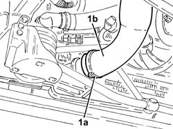
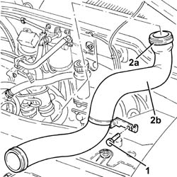

1048B22 air delivery sleeve from heat exchanger to intake manifold - r + r
- Path
- Procedures > 10 ENGINE > 1048 ENGINE AIR SUPPLY CIRCUIT > 1048B PRESSURE AIR CIRCUIT > 1048B22 air delivery sleeve from heat exchanger to intake manifold - r + r
- Kind
- repair procedure (removal / refitting; the operation number is the code)
- Applies to
- all engines; all production periods
- Interactive page
- https://sloeber94.github.io/elrnDB-fDbl/en/#/2584489
Applies to: all engines; all production periods
 Removing
Removing
 Refitting
RefittingPosition the vehicle on the ramp.
Proceed with the removal 5530B10 battery - r+r .
Proceed with the removal 5530B52 Battery DRIP TRAY/SUPPORT - R.R. .
Proceed with the removal 7055B54 under-engine guard - r r .
1. Loosen the band (1a) and disconnect the air supply duct from heat exchanger to inlet manifold (1b), heat exchanger side.

Applies to: all engines; all production periods
1. Undo the bolt securing to the gearbox the bracket supporting the air supply duct from heat exchanger to inlet manifold.
2. Loosen the bands (2a) and remove the air supply duct from heat exchanger to inlet manifold (2b).

Applies to: all engines; all production periods
Refitting
RemovingRefit in its seating the air supply duct from heat exchanger to inlet manifold, connect it to the throttle body and tighten the relevant band.
Tighten the bolt securing to the gearbox the bracket supporting the air supply duct from heat exchanger to inlet manifold.
Cconnect the air supply hose from heat exchanger to inlet manifold, heat exchanger side, and tighten the band.
Proceed with the refitting 7055B54 under-engine guard - r r .
Proceed with the refitting 5530B52 Battery DRIP TRAY/SUPPORT - R.R. .
Proceed with the refitting 5530B10 battery - r+r .
Remove the car from the ramp.